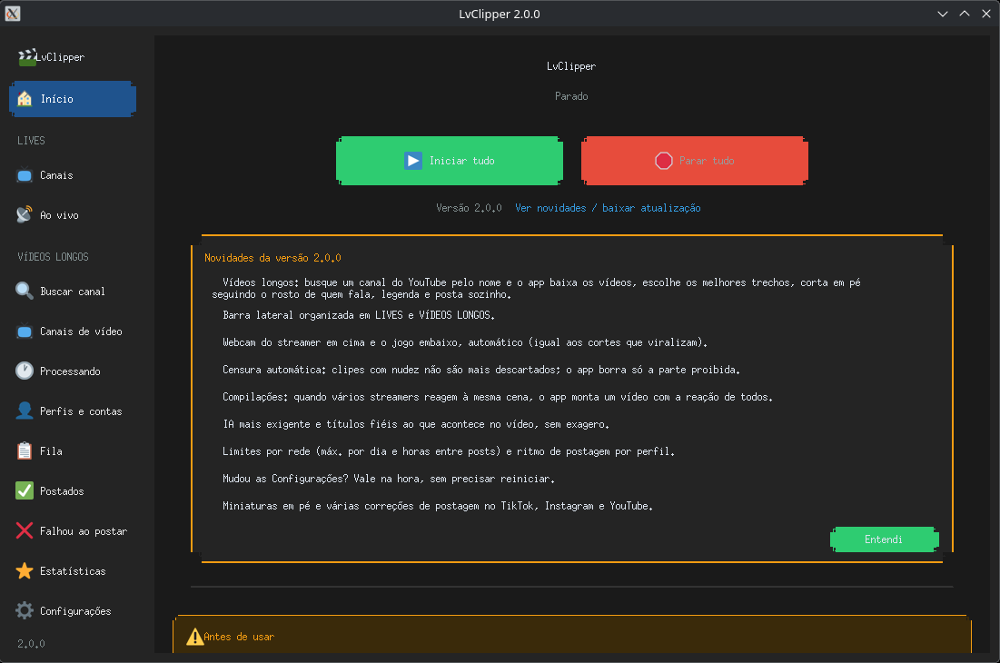

O bot que assiste as lives por você e posta os melhores cortes sozinho
O LvClipper acompanha lives e vídeos, encontra os momentos com mais potencial com inteligência artificial, corta em vertical, legenda, coloca sua marca d'água e publica no TikTok, Reels e Shorts. Sem editar nada.
Twitch • Kick • YouTube → TikTok • Instagram Reels • YouTube Shorts

Como funciona
Você escolhe os canais e as contas. O resto o LvClipper faz sozinho, o dia inteiro.
Escolha os canais
Adicione os streamers (Twitch, Kick, YouTube) ou busque um canal do YouTube pelo nome para cortar os vídeos dele.
A IA acha os melhores momentos
Quando o chat explode ou algo marcante acontece, o app recorta o trecho e a IA dá uma nota de 0 a 10. Só os bons seguem.
Corta, legenda e posta
Vídeo vertical pronto, com legenda, título e sua marca d'água, publicado no ritmo que você definir.
Tudo o que um canal de cortes precisa
Do corte à postagem, num programa só.
Cortes de lives automáticos
Grava as lives e detecta os picos pelo chat e pelo áudio. Funciona com Twitch, Kick e YouTube.
IA que escolhe e avalia
A IA assiste o trecho, escolhe o começo e o fim certos, dá nota e escreve título e manchete fiéis ao que aconteceu.
Formato que viraliza
Webcam do streamer em cima e o jogo embaixo, automático. Em podcasts e vídeos, o recorte acompanha o rosto de quem fala.
Legenda automática
Legenda gerada no próprio computador, em português ou traduzida para o inglês para um perfil internacional.
Posta sozinho
TikTok, Instagram Reels e YouTube Shorts em vários perfis, com limite por dia e intervalo entre posts para cada rede.
Vídeos longos e do computador
Busque um canal do YouTube pelo nome ou use vídeos do seu computador: o app escolhe os melhores trechos e transforma em cortes.
Proteção da conta
Censura automática do que não pode aparecer, ritmo de postagem configurável e aviso quando a rede pede verificação.
Sua marca e campanhas
Marca d'água, texto e hashtags obrigatórias de campanha em todo corte. Ideal para programas de clipadores.
Estatísticas
Veja as visualizações de cada corte por rede e quais canais rendem mais.
⚠️ Use o LvClipper com streamers e criadores que autorizam cortes (programas de clipadores e campanhas pagas por visualização) ou com conteúdo seu. Respeite os direitos autorais e as regras de cada rede.
Perguntas frequentes
Ficou alguma dúvida? Chama no WhatsApp.
O que é o LvClipper?
É um programa para Windows que faz cortes automáticos: acompanha lives e vídeos, encontra os melhores momentos com IA, corta em vertical, legenda, coloca sua marca d'água e posta no TikTok, Instagram Reels e YouTube Shorts.
Preciso saber editar vídeo?
Não. Corte, legenda, enquadramento e postagem são automáticos. Você só escolhe os canais e as contas.
Em quais redes ele posta?
TikTok, Instagram (Reels) e YouTube Shorts, em quantos perfis você quiser, com limite de posts por dia e intervalo configuráveis por rede.
Precisa deixar o computador ligado?
Sim, ele roda no seu PC com Windows enquanto estiver aberto. O navegador de postagem fica escondido e só aparece quando precisa de você (por exemplo, um login).
Preciso pagar a IA?
O LvClipper usa a IA do Google (Gemini). Dá para começar com uma chave gratuita do Google AI Studio; o app explica o passo a passo.
Quanto custa e como compro?
A licença é liberada pelo WhatsApp. Baixe o programa, copie o ID do computador que aparece na tela de licença e mande pra gente.
Comece a postar cortes hoje
Baixe grátis, teste e fale com a gente para liberar a licença.